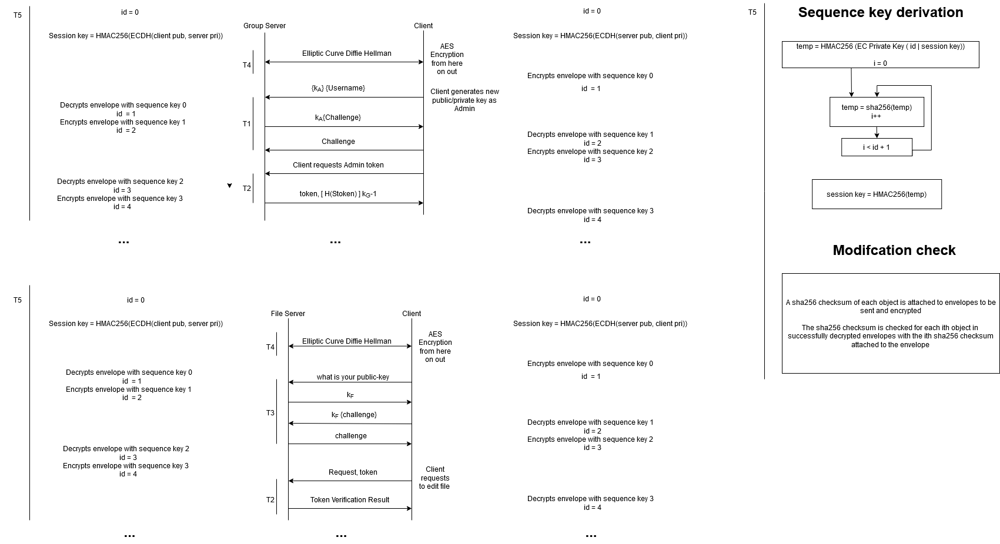

Friedrich Doku frd20@pitt.edu
Dominique Mittermeier dom41@pitt.edu
Isa Sulit-Peralejo ias28@pitt.edu
SHA-256: We use this to address threat 3. SHA256 can not be reversed to receive the origin data. It is equipped with pre-image resistance making it a one-way algorithm. It has very high propagation consequences where any small changes will result in a completely different output. Along with second pre-image resistance and collision resistance making the algorithm infeasible to have any two inputs output the same hashing result.
RSA keys: We use these to address threats 1, 3, and 4. RSA algorithm relies heavily on the complexity of factoring mathematics.
All RSA public keys are shared on a trusted communication channel out of band.
Diffie-Hellman Key Exchange: We use this to address threats 1, 2, and 4. These threats are vulnerable to passive attackers. In the case of threat 1, we don’t want the attacker to steal user tokens. In the case of threat 2, we also don’t want the attacker to steal tokens that are going through transit. In the case of threat 4, we want all communications in the system to be secure. We want to provide confidentiality between two communicating entities.
CBC: When doing AES encryption we will use this block mode. CBC provides strong confidentiality protections without security issues like ECB.
AES: After using the diffie-hellman to generate a shared secret, we will use that secret as the key for AES encryption.
Threat Description: Because clients are untrusted, they might try to access the tokens of other accounts to gain access to files they don’t have the correct permissions for. To solve this problem clients need to be authenticated by the GroupServer before the token is sent over the network. On top of accessing protected files, this vulnerability also allows users to lock other users out of groups. For example, if the adversary uses a token of a user that is also the owner of several different groups, that adversary can also kick out legitimate users from those groups, thereby preventing them from accessing files.
Mechanism Description: To solve this problem we can use the same method that SSH uses to connect users e.g we can use a public/private key pair. The private key is known only to the user and the public key is known to the group server.
MAIN IDEA: To authenticate a user the GroupServer will send the user a challenge. The Group server will have the public key of the user that is requesting authentication and use that key to send a challenge, which will be a message encrypted with the user’s public key. If the user can decrypt the challenge and send it back to GroupServer, then the GroupServer will send the token back to the user. To protect the private key from offline attackers we can encrypt it using a password.
WHAT KEYS TO USE: For public/private keys we can use RSA keys. To be safe we will use a key size of 2048. It will take classical machines a really long time to crack an RSA key of this size. Unless our adversary has access to supreme quantum technology, which I doubt. There are also diminishing returns when using larger keys. Decryption becomes much slower as the key size increases. Although we are not doing anything besides authentication with these keys, this may become a problem for end users.
PRIVATE KEY PARAPHRASE: To protect the private keys we can encrypt using a paraphrase. The paraphrase will be the key for AES 256 CBC encryption. With CBC identical blocks don’t use the same cipher. By using CBC we can provide semantic security.
Correctness: This mechanism efficiently prevents attackers because you need to have some proof of identity before you can access the GroupServer. Without the private key of the user, you can’t decrypt the challenge, and if you can’t decrypt the challenge then you can’t access the token. In order to obtain the private key of the user you will need to break into the user’s device and you also need to figure out the paraphrase.
Threat Description: This threat is when users modify their tokens to extend their permissions beyond the pre-authorized actions. It is also when users completely fabricate tokens for themselves that have permissions they have assigned without consent from the server. For example, Todd has been given permission to create and edit files within group A. Todd wants to delete files so he modifies his token to resemble an admin token of Group A. He then uses that to delete a preexisting file within Group A. Another example is George accessing the server without any pre-existing association with the server. He forges his own user token within group B so that he can modify a file within group B. This is a huge problem because it completely exploits the fail/safe default and the least privilege principles within our program design. We designed our program to only allow access to an object when given explicit access and otherwise deny access. This keeps all files secure from unwanted and nonpermitted modifications. We do not want to allow changes to files from users that are not permitted to make those changes.
Mechanism Description: To solve this problem we will use signed hashing. Our Token object takes in three String fields, Group Server name (sname), Username (uname), and User Groups ArrayList (groups). The token will be serialized with these fields. The serialized String version will be: `sname.uname.groups[0].groups[n]` The ordering will remain consistent and the `.` character will not be allowed in the Group Server name (sname), Username (uname), nor the User Group names. .
The serialized token will then be hashed with SHA-256. This will guarantee integrity. Assurance that the token has not been modified or forged. More specifics on the SHA-256 algorithm are in the introduction.
Our group server will have a pair of public/private RSA keys (key size of 2048) that will be used to provide authentication or proof that the token has indeed been sent from the group server. We chose a large key size to ensure complexity and deter hackers. It will use its private key to create a signature on the hashed token. This signed hashed token (along with the raw token) will be sent to the client requesting the token. The signed hashed token will also be stored in a hash table for later comparisons.
Whenever a request is sent by the client and to either server, the token will need to be verified. This is when the group server will take the raw token provided and serialize it, hash it, and sign it. It will then compare that version to the signed hash token already in the hash table. If they both match the request will be further reviewed. Otherwise the client will be notified that the token is not authentic. If the request and token are sent to the file server it will follow all the same steps except instead of signing the hashed token it will leave it hashed and retrieve the hashed signed token from the hash table. It will unsign that version because it only has access to the group servers public key and it will then compare those two tokens to one another.
It is assumed that public keys will be set up before the system starts, the file server has retrieved the group servers public key via an unrelated trusted channel, Bob has already been authenticated by the server with the implementation described in threat 1, and the File server to Group server connection has been established.
The first diagram shows Bob requesting a token. Bob has already been authenticated previously in T1. The server then sends the token along with the signed hash token. The server stores the signed hash token in a hash table. The second diagram shows an instance where Bob is attempting a new request. Bob is required to send his token along with his request. The File Server then has to authenticate the token by comparing it to the stored hash token in the hash table.
Correctness: Due to hashing the token and keeping that hashed token on the group server, we are able to prevent a malicious attack where an already established user modifies their token to permit new actions they were originally not permitted to take. This also prevents attacks from nonestablished users trying to pose as a user. The hashed token will not match an altered token because hashing has propagation techniques that will easily detect modifications. The serialization of the token only occurs before the hashing and is always serialized in the same order. A nonestablished user will also not be able to create a token to match an already-made hash token because hashes can not be reversed and a token serialized in a different order will not hash the same. The client can also be certain the token came from the correct group server due to it being signed with the group server's private key. Only the group server has access to that private key so no one can pose as the group server.
Threat Description: This threat can have dramatic consequences. If a user is unable to authenticate a files server, then that user may end up uploading sensitive files to the attacker's file server. This threat must be addressed because a successful compromise can harm the integrity of the whole system.
Mechanism Description:
MAIN IDEA: To prevent this attack. We need to design the system, so users can assure that the file servers they are connecting to are legitimate file servers. To solve this problem we can use challenge-response authentication. To do this, every file server will have a public/private key pair. The private keys will stay on the server, and the public keys will be distributed to each user in the system. In other words, each user will have the public keys of every file server in the system.
Before establishing a connection with the file server. The user will create a session key using the diffie-hellman key exchange. The file server will then encrypt its public key and send it to the user. The user will encrypt a challenge with the file server’s public key. The file server will then decrypt the challenge, add 1 to it, encrypt it, and send it back to the user. If the user gets the correct message, then it’s okay to establish a connection with that file server.
WHAT KEYS TO USE Same as T1 we can use RSA keys with the size of 2048, which is efficient enough and safe enough to use for authentication. Unlike above we can’t use a paraphrase because the file server is not an interactive application. There will be no person to enter the paraphrase, so the private key will just be kept on the disk.
CORRECTNESS: This mechanism allows the user to verify the file server. If the file server sends back the incorrect challenge, then the user will not upload their files to that server.
Threat Description: Information Leakage via Passive Monitoring suggests a third party’s intentions to eavesdrop on the communication between two endpoints. The ability to snoop on the information in transit clearly compromises confidentiality since the adversary intercepts the contents of the exchanged messages. Information interception compromises confidentiality. For example, Alice may send a secret message to Bob. Candice, listening in on the communication, learns about the secret shared by Alice. After capturing the traffic, the attack may impersonate an endpoint since the recipient may believe the authenticated message came from the original sender. For example, Candice sends some information to Bob along with Alice’s secret. Since Bob received Alice’s secret, Bob believes that Candice is Alice. The latter example is a replay attack which presents a violation of integrity. Our solution against this threat secures both confidentiality and integrity so that the content of messages cannot reveal meaningful information regardless of an eavesdropping third party.
Mechanism Description:
Secure Sockets To secure sockets, a handshake occurs via the Diffie Hellman key exchange which is described in the next section. Once the ephemeral session key is created, secure symmetric encryption will be achieved.
Session Keys and encryption/decryption A unique session key will be created to encrypt communications between endpoints. Generating session keys limits replay and injection attacks to sessions. For example, if a packet from one session is intercepted by Candice, Candice cannot forge communications to either Alice or Bob since the previously intercepted session key will not be able to decrypt or encrypt future sessions. To guarantee a new session key is created, we use a Diffie-Hellman key exchange.
The Diffie-Hellman exchange allows Alice and Bob to create individual secrets, a and b. The public values are g^a and g^b. The shared secret g^(ab) can only be computed between Alice and Bob which completes the Diffie-Hellman key agreement protocol. After the shared secret is computed, an ephemeral session key can be generated for the AES algorithm.
In this part, the session key will be derived by the shared secret using PBKDF2 with HMAC. PBKDF2 reduces vulnerabilities to brute-force attacks. While PBKDF2 may be slow, it will only be used to create the session key. The use of HMAC will ensure integrity as the function can only output a correct session key with the shared secret between Alice and Bob and with the hash function. Since session keys are ephemeral, forward secrecy is guaranteed since any previously intercepted session keys will not provide an adversary anything meaningful.
After the session key is created, AES-256 can be used in CBC mode with an initialization vector. AES-256 in CBC mode will be used for both encryption and decryption where the initialization vector will be the same for both actions. The use of a different IV will cause decryption to fail. The use of AES in CBC mode ensures confidentiality. All session keys are thrown away after the session is complete.
Our first diagram depicts the interaction between the group server and the admin client. Our threat four solution is the first to take action. Diffie Hellman key exchange is used to create a unique session key to encrypt communications between the client and group server. This encryption will last for the entire session. Threat one’s solution is then invoked when the admin creates their own public/private key pair. The group server uses the admin’s public key to encrypt a challenge and once the admin sends the challenge back they will be authenticated. Threat two’s solution is the last to be utilized when the admin requests its token. The group server will create the serialized token and send it back to the admin along with the signed hash serial token to provide proof of the token’s origin.
Our second diagram shows the interaction between the file server and a client for the first time. Once again our threat four solution starts the session encryption. Then our threat three solution is used to authenticate the file server by using the file server's public key to encrypt a challenge. Once the file server sends back the correct challenge they will be authenticated. Now the client may request to edit a file or any action within their token privileges. This invokes threat two’s solution and when the client sends the request they also send their serialized token along with it. The file server will send the serialized token to the group server to be authenticated. Once the group server notifies the file server that the token is authentic and belongs to that given user, the file server will proceed with the request.
Something we struggled with during the entire process was overcompensating for active attacks when it wasn't necessary for this phase. We were overthinking our solutions thinking we needed extra security causing us to waste brainstorming time and we just ended up backtracking to a simpler version. One example of that was contemplating implementing TLS but we figured out during our first meeting that it was overkill. We decided to just use parts of TLS that we felt were appropriate for our threats.
